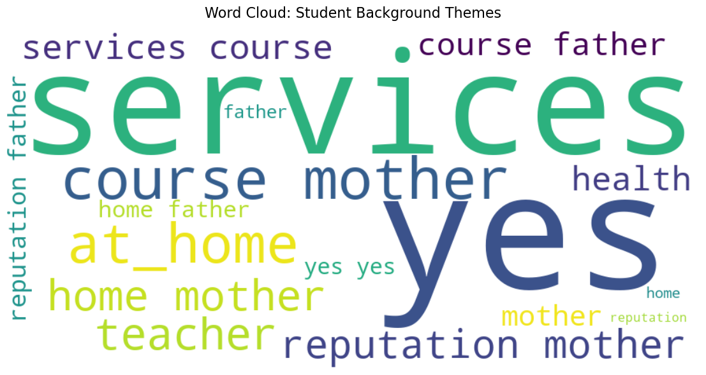

import warnings
import re
import numpy as np
import pandas as pd
import matplotlib.pyplot as plt
import seaborn as sns
import statsmodels.api as sm
import statsmodels.formula.api as smf
from wordcloud import WordCloud
# Scikit-Learn Imports
from sklearn.compose import ColumnTransformer
from sklearn.preprocessing import StandardScaler, PolynomialFeatures, OneHotEncoder
from sklearn.linear_model import (
LinearRegression,
Lasso, LassoCV,
Ridge, RidgeCV,
)
from sklearn.neural_network import MLPRegressor, MLPClassifier
from sklearn.model_selection import train_test_split, KFold, cross_val_score
from sklearn.tree import DecisionTreeRegressor, DecisionTreeClassifier
from sklearn.metrics import mean_squared_error, r2_score, mean_absolute_error
# Configuration
warnings.filterwarnings('ignore')3. Neural Networks + Text Mining (Modern ML / Enrichment)
Data loading and prep
df = pd.read_csv('data/student-por.csv')
print(f"Sample size: {df.shape[0]} students, {df.shape[1]} variables")
print(f"\nVariable types:\n{df.dtypes.value_counts().to_string()}")
missing = df.isnull().sum()
print(f"\nMissing values: {'None' if missing.sum() == 0 else missing[missing > 0]}")
df.head()Sample size: 649 students, 33 variables
Variable types:
object 17
int64 16
Missing values: None| school | sex | age | address | famsize | Pstatus | Medu | Fedu | Mjob | Fjob | ... | famrel | freetime | goout | Dalc | Walc | health | absences | G1 | G2 | G3 | |
|---|---|---|---|---|---|---|---|---|---|---|---|---|---|---|---|---|---|---|---|---|---|
| 0 | GP | F | 18 | U | GT3 | A | 4 | 4 | at_home | teacher | ... | 4 | 3 | 4 | 1 | 1 | 3 | 4 | 0 | 11 | 11 |
| 1 | GP | F | 17 | U | GT3 | T | 1 | 1 | at_home | other | ... | 5 | 3 | 3 | 1 | 1 | 3 | 2 | 9 | 11 | 11 |
| 2 | GP | F | 15 | U | LE3 | T | 1 | 1 | at_home | other | ... | 4 | 3 | 2 | 2 | 3 | 3 | 6 | 12 | 13 | 12 |
| 3 | GP | F | 15 | U | GT3 | T | 4 | 2 | health | services | ... | 3 | 2 | 2 | 1 | 1 | 5 | 0 | 14 | 14 | 14 |
| 4 | GP | F | 16 | U | GT3 | T | 3 | 3 | other | other | ... | 4 | 3 | 2 | 1 | 2 | 5 | 0 | 11 | 13 | 13 |
5 rows × 33 columns
part 1: text mining
# verify columns exist in the dataframe to avoid errors
possible_cols = ['Mjob', 'Fjob', 'reason', 'guardian', 'schoolsup', 'activities']
text_cols = [c for c in possible_cols if c in df.columns]
# We convert to string first to ensure no errors with non-text data
text_data = " ".join(
df[text_cols]
.astype(str)
.apply(lambda row: " ".join(row.values), axis=1)
.tolist()
)
# Generate Word Cloud
wordcloud = WordCloud(width=900, height=450, background_color="white", colormap='viridis').generate(text_data)
# plot and save graphs
plt.figure(figsize=(12, 6))
plt.imshow(wordcloud, interpolation="bilinear")
plt.axis("off")
plt.title("Word Cloud: Student Background Themes", fontsize=16)
plt.tight_layout()
plt.savefig("graphs/word_cloud.png", bbox_inches="tight", dpi=200)
plt.show()
part 2: neural networks
# Create Binary Target (Pass = G3 >= 10)
df['passed'] = (df['G3'] >= 10).astype(int)
# fdefine x and y and drop unnecessary columns
drop_cols = ['G3', 'passed', 'G1', 'G2']
X = df.drop(columns=[c for c in drop_cols if c in df.columns])
y = df['passed']
# define Preprocessing Pipeline
num_cols = X.select_dtypes(include=['int64', 'float64']).columns
cat_cols = X.select_dtypes(include=['object', 'category']).columns
preprocessor = ColumnTransformer(
transformers=[
('num', StandardScaler(), num_cols),
('cat', OneHotEncoder(handle_unknown='ignore'), cat_cols)
])
# stratified Train-Test Split
X_train, X_test, y_train, y_test = train_test_split(
X, y, test_size=0.2, random_state=42, stratify=y
)
# apply Transformations
X_train_scaled = preprocessor.fit_transform(X_train)
X_test_scaled = preprocessor.transform(X_test)
# train Neural Network
nn_model = MLPClassifier(hidden_layer_sizes=(64, 32),
activation='relu',
max_iter=1000,
random_state=42,
early_stopping=True)
nn_model.fit(X_train_scaled, y_train)
# train Decision Tree
dt_model = DecisionTreeClassifier(max_depth=5, random_state=42)
dt_model.fit(X_train_scaled, y_train)
# evaluate and compare
nn_pred = nn_model.predict(X_test_scaled)
dt_pred = dt_model.predict(X_test_scaled)
nn_acc = accuracy_score(y_test, nn_pred)
dt_acc = accuracy_score(y_test, dt_pred)
print(f"Neural Network Accuracy: {nn_acc:.4f}")
print(f"Decision Tree Accuracy: {dt_acc:.4f}")Neural Network Accuracy: 0.8462
Decision Tree Accuracy: 0.7538